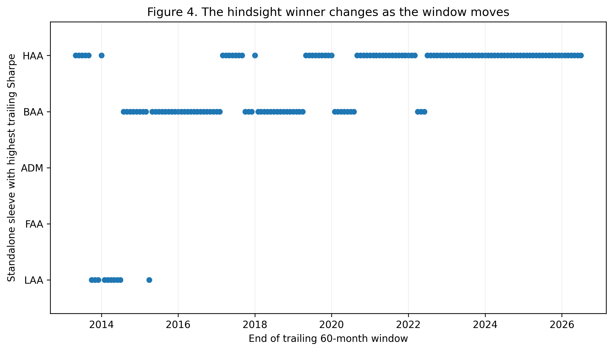

Diversify the Decisions,
Not Just the Assets.
ADAA is a rule-governed multi-strategy architecture. This dashboard lets readers inspect how its components differ in what they own, when they change, and how much risk they take—without turning the research into a live trading tool.
A portfolio can hold several strategies and still depend on one broad decision.
The research asks whether diversification should reach the decision rules themselves—not only the assets those rules eventually hold.
Five current sleeves, deliberately different decision roles.
The public rules are sources, not immutable recipes. The paper audits where the investable sleeves preserve a parent decision role and where they should be described as practitioner redesigns.
Return correlation is not the whole diversification story.
Two rules can have correlated returns while changing at different times or holding materially different target portfolios. The dashboard exposes both the current-sleeve geometry and the broader 2023 reference pool.
Return correlation vs. transition disagreement
Current five sleeves · pairwise evidence
All 4,368 five-rule combinations
Average Decision-Space diversity score
16-rule Decision-Space matrix
Cell = primary pairwise decision distance. Hover for What / Holdings / When components.
Performance is evidence to inspect, not a claim that every episode is protected.
The core comparison reports return, volatility, Sharpe, drawdown, turnover, transaction-cost sensitivity, and explicit stress windows.
Gross risk/return profile
CAGR, volatility and drawdown depth
Stress and failure map
Active return versus 60/40 within specified episodes
Core gross performance table
The hindsight-strongest sleeve is an ex-post comparator, not an implementable ex-ante rule.
| Portfolio | CAGR | Volatility | Sharpe | Max DD | Ann. L1 turnover |
|---|
Where it helped—and where it did not
Predeclared stress windows plus one data-defined rapid-reversal diagnostic
| Episode | Selection basis | ADAA | 60/40 | Active |
|---|
Avoid the cliffs; do not chase the peak.
The later practitioner weights sit inside a broad high-performing region. The exact ex-post optimum is unstable across bootstrap and rolling windows, which argues for moderate rather than peak optimization.
Near-95% full-sample weight ranges
Blue dot = later practitioner weight · amber dot = full-sample ex-post optimum

Currency exposure is an extension, not part of the core ADAA claim.
The FX appendix compares hedged, partially unhedged, unhedged, and legacy dynamic exposure paths on the frozen underlying ADAA returns.
Currency-exposure growth paths
Switch between gross and 25 bps underlying-return paths.
Gross FX variants
Zero-rate Sharpe is an appendix descriptive statistic and is not directly comparable with the paper’s BIL-excess Sharpe.
| Variant | CAGR | Volatility | Zero-rate Sharpe | Max DD | Avg unhedged | State changes |
|---|
Paper, replication materials, and dashboard use the same frozen evidence.
The dashboard is a presentation layer for the public research record. Interface changes do not alter the underlying results.
Paper
Canonical public manuscript
ADAA_SSRN_Working_Paper_v1.22_FINAL_PUBLIC_RELEASEReplication
Rights-safe validated package
ADAA_Public_Replication_Package_v1.0.2